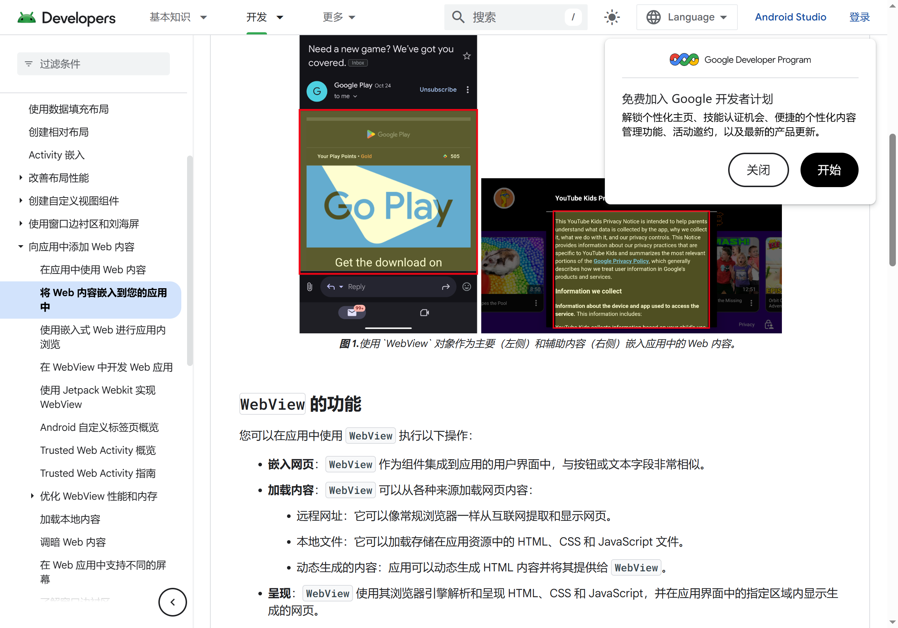

Android WebView 开发者实战指南：从嵌入第一个网页到搞定权限与下载
想在自己的 Android App 里嵌入网页？这篇教程带你走完 WebView 集成的全流程——从初始化配置、处理权限请求，到搞定各厂商 ROM 的兼容性坑，一步都不落下。
你将学到什么
这篇教程结束时，你能独立在 Android App 里集成 WebView，正确处理相机、麦克风、定位等权限请求，搞定小米 HyperOS、华为 ArkWeb 等厂商 ROM 上的 blob URL 拦截问题，让 App 内嵌的网页功能像原生浏览器一样跑通。在动手之前，如果你还对 WebView 的全貌感兴趣，可以先去 webview官网 看看它的完整功能介绍。
准备工作
在动手之前，先确认这几样东西：
- 开发环境：Android Studio 或 VS Code + Android SDK，最低编译版本建议 API 23（Android 6.0），因为运行时权限模型从这个版本开始强制要求
- 依赖：Gradle 里只需一行——
implementation 'androidx.webkit:webkit:1.11.0'，这是 JetPack 维护的 WebKit 兼容层，比直接用系统android.webkit.WebView更稳；WebView APK 本身也需要更新才能跟上 Chromium 主线，可以去 webview下载 拿最新版本。 - Manifest 权限：网络权限是必须的（
android.permission.INTERNET），相机、麦克风、定位按需声明，注意 Android 13+ 还有细粒度权限（POST_NOTIFICATIONS等），别漏了
第一步：在布局里放 WebView 并初始化
先在 Activity 或 Fragment 的布局 XML 里加一个 WebView 容器：
<WebView
android:id="@+id/webView"
android:layout_width="match_parent"
android:layout_height="match_parent" />然后在代码里拿到实例，做三件核心配置：
WebView webView = findViewById(R.id.webView);
WebSettings settings = webView.getSettings();
// 1. 开启 JS 支持——绝大多数网页都依赖 JS 渲染
settings.setJavaScriptEnabled(true);
// 2. 开启内容访问——小米 HyperOS 上 blob 下载需要这个
settings.setAllowContentAccess(true);
// 3. 开启硬件加速渲染——性能直接拉满
webView.setLayerType(View.LAYER_TYPE_HARDWARE, null);别急着 loadUrl() 往下走，还有两个回调必须先挂上，不然后面权限和文件上传全会静默失败。
第二步：配置 WebViewClient 和 WebChromeClient
很多新手只配了 WebViewClient，然后发现网页里点文件上传没反应、调相机拿不到权限——因为这些是 WebChromeClient 管的，两者分工不同：
| 回调类 | 负责什么 |
|---|---|
| WebViewClient | 页面加载、URL 拦截、错误处理 |
| WebChromeClient | JS 对话框、权限请求、文件上传、视频全屏、进度条 |
先把 WebChromeClient 挂上，至少实现 onPermissionRequest 这个方法。这是整套教程最容易翻车的地方——WebView 默认不会帮你弹权限框，App 必须自己实现整套授权流程。
webView.setWebChromeClient(new WebChromeClient() {
@Override
public void onPermissionRequest(PermissionRequest request) {
// 拿到网页请求的权限资源列表
String[] resources = request.getResources();
// 1. 先检查 Android 运行时权限（API 23+）
if (needsRuntimePermission(resources)) {
// 2. 请求 Android 运行时权限
ActivityCompat.requestPermissions(
MainActivity.this,
toManifestPermissions(resources),
1001
);
// 3. 暂存 request，等系统权限回调后再 grant
pendingPermissionRequest = request;
} else {
// 没有运行时权限要求，直接放行
request.grant(resources);
}
}
});然后在 Activity 的 onRequestPermissionsResult 回调里补完最后的 grant 动作：
@Override
public void onRequestPermissionsResult(int rc, String[] perms, int[] results) {
if (rc == 1001 && pendingPermissionRequest != null) {
if (allGranted(results)) {
pendingPermissionRequest.grant(pendingPermissionRequest.getResources());
} else {
pendingPermissionRequest.deny();
}
pendingPermissionRequest = null;
}
}这里注意一个细节：用户选了"以后不再问"之后，ActivityCompat.requestPermissions 不再弹窗——你的代码需要检测 shouldShowRequestPermissionRationale 返回 false 时引导用户去系统设置里手动打开权限。另外 WebChromeClient 还管着文件上传、JS 对话框、视频全屏等好几个场景，完整的回调清单可以去 webview文档 里翻。
第三步：处理 blob URL 下载被拦截
这是国内厂商 ROM 上最常见的坑——小米 HyperOS、华为 ArkWeb 默认拦截 blob: 协议，导致网页里的附件下载、PDF.js 预览、二维码扫描结果保存等功能什么都不发生、也不报错。
出现这个现象时，先判断设备类型：
小米 HyperOS 的解法（反射调用私有 API）：
try {
Class<?> clazz = Class.forName("com.android.webview.Settings");
Method m = clazz.getMethod("setAllowBlobUrls", boolean.class);
m.invoke(settings, true);
} catch (Exception e) {
// 非 HyperOS 设备或版本不支持，走默认行为
}这个 setAllowBlobUrls 是小米私有 API，不是 Android 标准接口，所以必须用反射——直接编译会找不到类。而且版本变化可能失效，代码里一定要包在 try-catch 里。
华为 ArkWeb 的解法不太一样，鸿蒙上要让 JS 端手动触发下载事件：
const link = document.createElement('a');
link.href = blobUrl;
link.download = filename;
link.dispatchEvent(new MouseEvent('click', { bubbles: true, cancelable: true }));如果还是不行，大概率是鸿蒙 WebView 拦截了非 HTTPS 来源的 blob 下载——让后端改成 HTTPS 响应再试。
还有一个更通用的思路：绕开 blob 协议，让服务端直接提供可下载的 HTTPS URL，然后 App 端用 DownloadListener 接管下载：
webView.setDownloadListener((url, userAgent, contentDisposition, mimeType, contentLength) -> {
// 交给系统 DownloadManager 或自己处理
});这个方案对所有厂商 WebView 都生效，不用一个个兼容厂商私有 API。
第四步：确保 WebView 及时更新
WebView 是一个独立的 APK（包名 com.google.android.webview），版本号直接对应 Chromium 大版本——127 对应 Chromium M127，以此类推。更新它不需要跟着 Android 系统走，直接在应用商店搜 "Android System WebView" 就能找到并更新。

版本号的读法很简单：第一段（127、128、129…）是 Chromium 大版本，后面几截是 Google 内部的构建批次号，安全补丁更新会变最后一截。只要第一段跟上 Chromium 主线，就是最新的。
大部分情况下更新完不需要重启——WebView 是按需加载的，新版本渲染进程从下次 App 打开时就会用上。但如果你发现某些 App 内网页表现跟之前一模一样，重启一下设备是最稳妥的保险操作。
常见卡点与快速排查
卡点一：权限请求用户点了允许，但网页 JS 还是拿不到
八成是你只做了 ActivityCompat.requestPermissions，忘了在 onRequestPermissionsResult 里调用 pendingPermissionRequest.grant()。Android 系统的权限弹窗和 WebView 的 PermissionRequest 是两套独立机制——用户在系统弹窗点"允许"不代表网页那边自动收到授权回调，你必须手动桥接。
卡点二：小米 HyperOS 上 blob 下载就是不生效
先确认 settings.setAllowContentAccess(true) 有没有开——这个是前置条件，不开的话反射 setAllowBlobUrls 也没用。其次检查你的反射代码是否真的走到了，加一行日志打一下 Class.forName 有没有抛异常，HyperOS 不同版本这个私有 API 可能变动。
卡点三：网页在 App 里白屏但浏览器里正常
先在 WebViewClient.onReceivedError 里打日志看是什么错误。最常见的是 JS 没开（setJavaScriptEnabled(true)）、文件协议拦截（setAllowFileAccess(true)）、或者 HTTPS 混合内容被拦截（Android 9+ 默认禁止，可通过 setMixedContentMode 放宽）。
进阶方向
搞定上面四步之后，可以继续往这几个方向深入：WebView 与原生代码的双向通信（addJavascriptInterface）、预渲染加速（WebView.Prerenderer）、WebView 的多进程隔离（防止渲染崩溃带崩主进程）、以及 JetPack androidx.webkit 里的实验性 API（WebViewCompat、SafeBrowsingConfig）。
另外值得一提的是，WebView 从 Android 5.0 开始就不再是编译进系统镜像的静态库了——它被拆成一个独立签名的 APK，签名是 Google Platform 签名，与系统其他模块同源。这意味着你可以独立于 Android 系统升级来更新 WebView，不用再为了一个浏览器内核去刷固件。WebView 的主进程负责资源调度和进程管理，每个 WebView 实例有自己的渲染进程跑 Blink + V8，GPU 进程负责硬件加速——这种多进程隔离就是 Chromium 的安全基石，渲染进程崩溃只会让网页黑屏，不会把整个 App 带崩。

资料在哪找
本文涉及的完整代码示例和 API 参考资料，为了方便不同网络环境的开发者，分别托管在 GitHub、Gitee、GitCode 三个平台，按需取用即可。